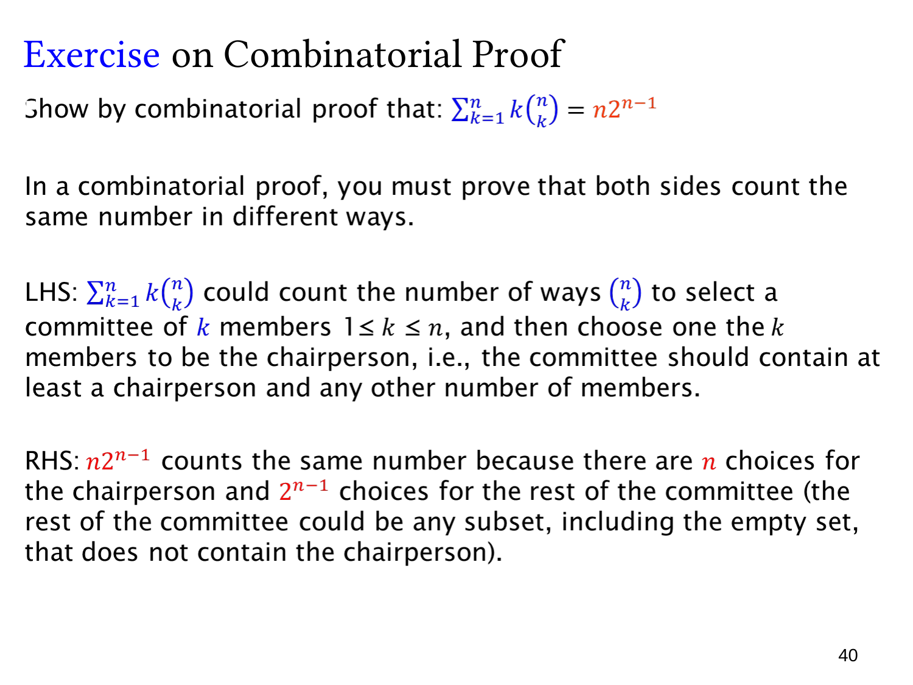

L1.7 · 第 40 页讲解原文
查看这一页课件

有主席的委员会：证明加权组合数求和
这一页要求用组合证明说明
k=1∑nk(kn)=n2n−1,n≥1.
共同计数的对象是：从 n 个不同的人中选出一个非空委员会，并指定其中一人为主席。委员会成员相同但主席不同，视为不同对象。
左边先确定委员会大小 k。从 n 人中选 k 人有 (kn) 种，再从这 k 人中选主席有 k 种，因此大小为 k 的情况有
k(kn)
种。对 k=1,…,n 求和，就数到全部带主席的委员会。
右边先选主席，有 n 种。对于剩余 n−1 人，每个人独立决定加入或不加入，共有
2n−1
种成员集合，所以总数为 n2n−1。
其余成员可以一个也没有：主席单独组成一个大小为 1 的委员会，这也是合法情况。两种方法都把每个“委员会与其主席”的组合恰好数一次，故两边相等。
例如 n=3，左边为 1⋅3+2⋅3+3⋅1=12，右边为 3⋅22=12。这个例子展示了组合证明的常用技巧：把权重 k 解释成“在已选对象里再指定一个特殊成员”。